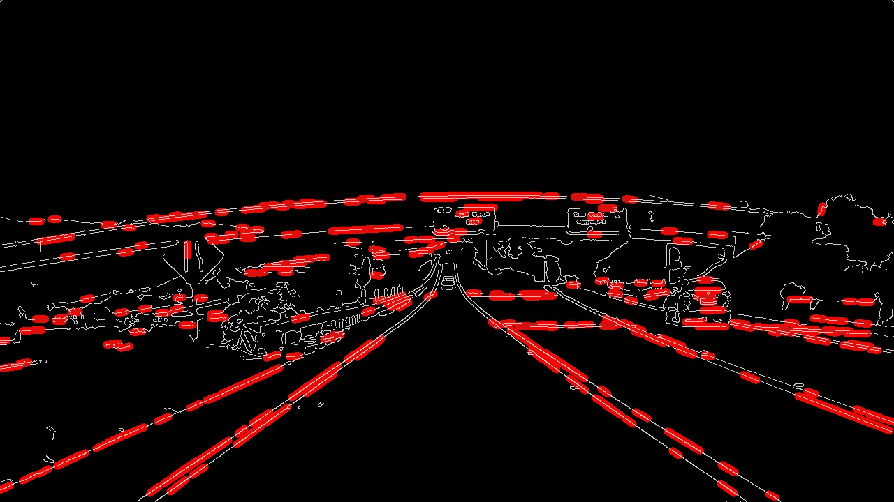
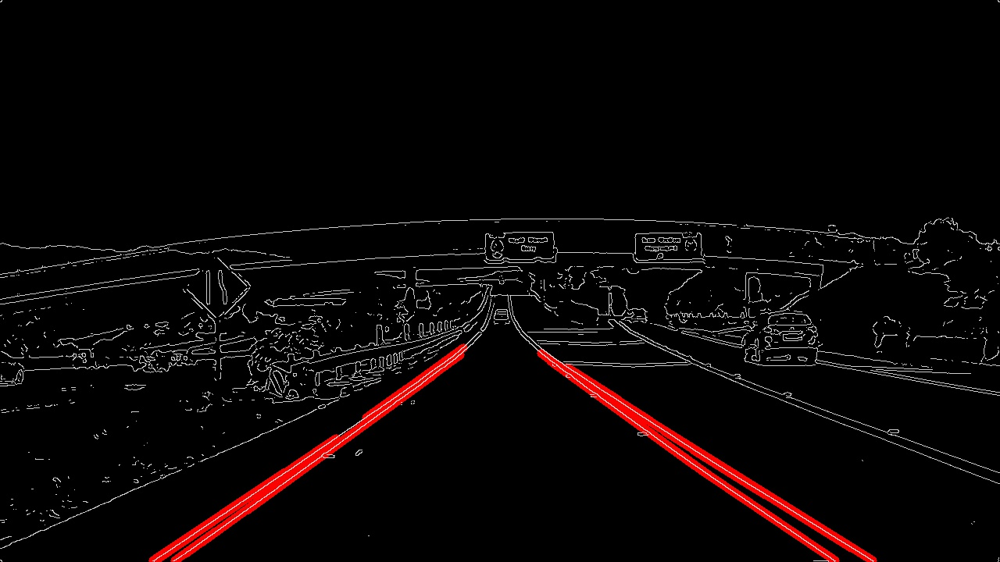
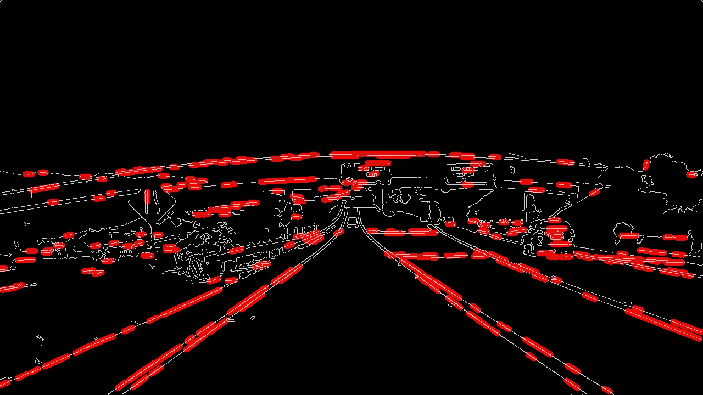
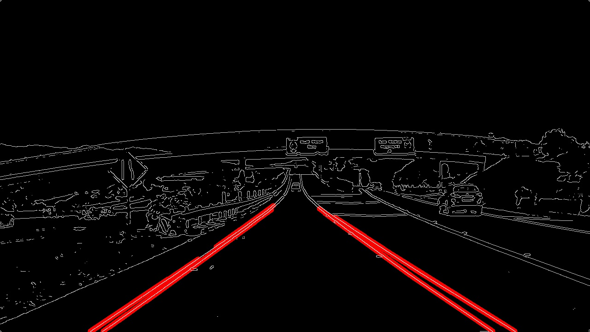

16. Hough Transform
Hough Transform Quiz
Question:
Now it's your turn to play with the Hough Transform on an edge-detected image. You'll start with the image on the left below. If you "Test Run" the quiz, you'll get output that looks like the center image. Your job is to modify the parameters for the Hough Transform and impose a region of interest mask to get output that looks like the image on the right. In the code, I've given you a framework for defining a quadrilateral region of interest mask.
 



Start Quiz:
Solution:
Here's how I did it: I went with a
low_threshold
of 50 and
high_threshold
of 150 for Canny edge detection.
For region selection, I defined
vertices = np.array([[(0,imshape[0]),(450, 290), (490, 290), (imshape[1],imshape[0])]], dtype=np.int32)
I chose parameters for my Hough space grid to be a
rho
of 2 pixels and
theta
of 1 degree (pi/180 radians). I chose a
threshold
of 15, meaning at least 15 points in image space need to be associated with each line segment. I imposed a
min_line_length
of 40 pixels, and
max_line_gap
of 20 pixels.
With these parameters, I'm picking up the lanes lines and nothing else, so looks like a decent solution!